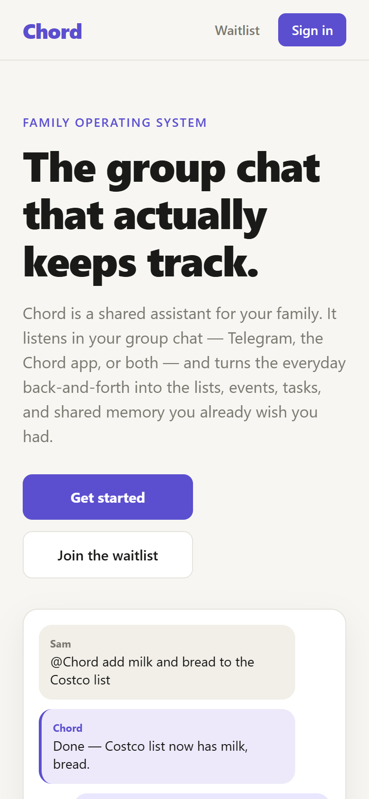
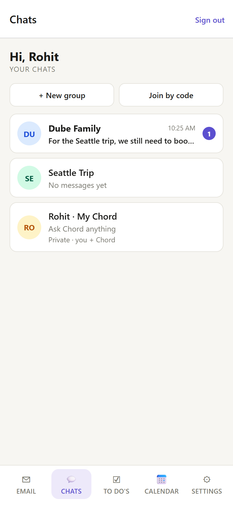
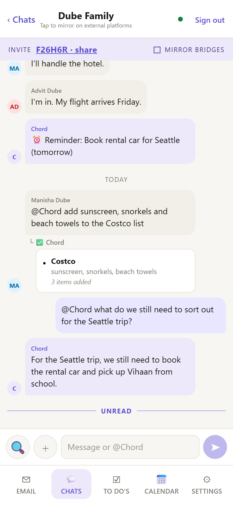
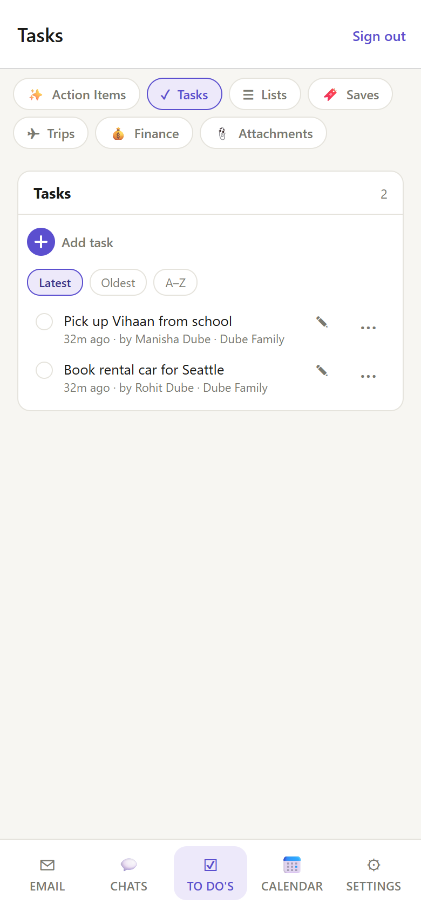
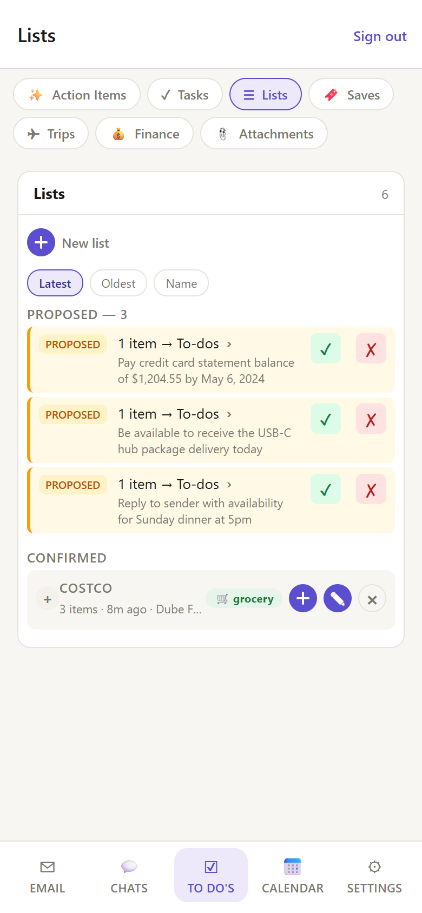
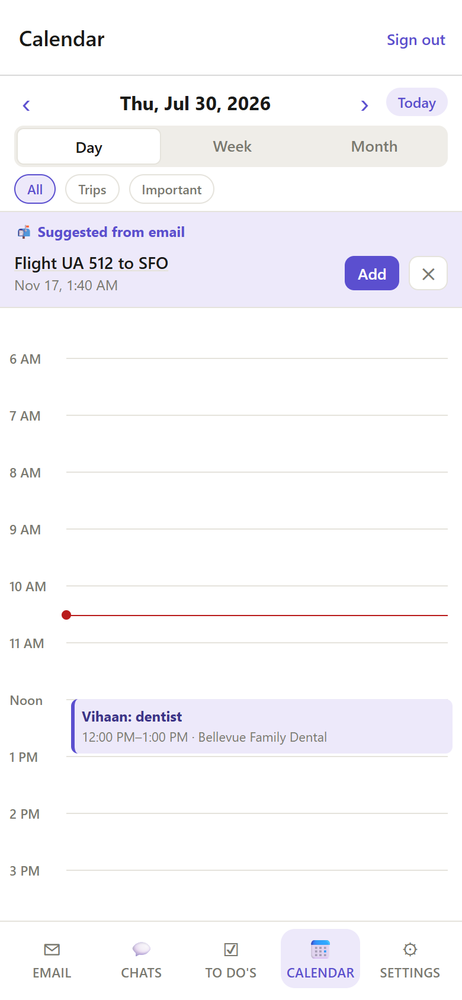
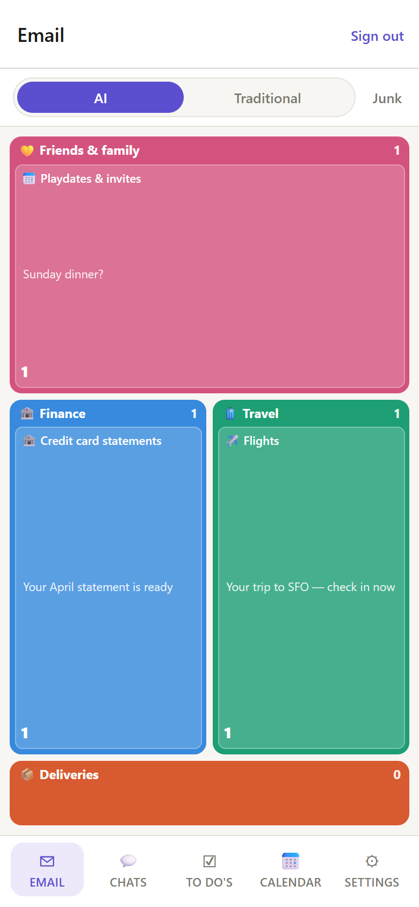
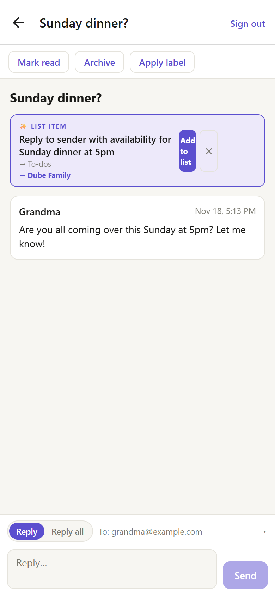
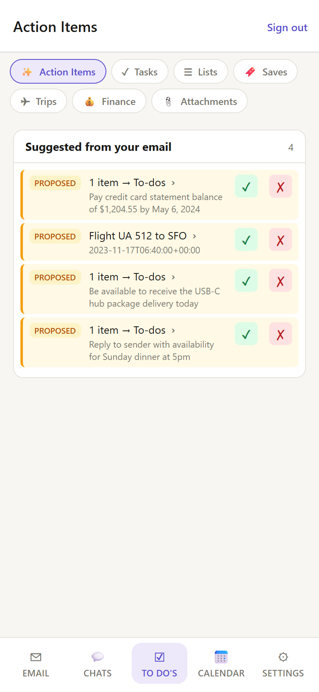
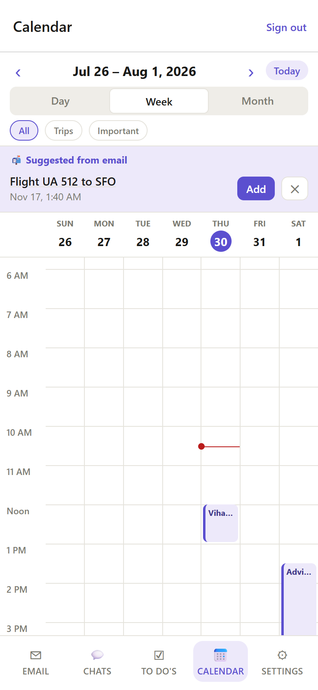

You sign in with Google. Everything else is optional and can be done later.
Changing your mind is one tap: disconnect any account from Settings › Connected accounts, or remove everything from Settings › Account › Delete account.
Not another chat app or another inbox — the layer between them. You decide by talking, the details arrive by email, and Chord turns both into one shared calendar and one list of who owes what.
Who's collecting Nolan, whether Saturday works, what we still owe the school. Decisions get made here.
Invitations, bills, schedules, confirmations. The history and the obligations already exist — buried.
Chord reconciles both sides into the two things a family actually runs on: what's happening, and who has to do it. Nothing is filed until someone confirms it.

Tap Get started and pick your Google account — that is the whole sign-up. Expect: Google's consent screen, then straight into the app.

Tap + New group and share the invite code, or Join by code. One group per household is usually right; add another for a trip. Everyone sees the same calendar and to-dos.

Sort things out in the group as normal. Start a line with @Chord to make it stick — or to ask what's still open. Expect: a card confirming what it filed, or a straight answer.
The habit to build: when the family lands on something, say it to @Chord in plain words — “Alice's picking up Nolan Thursday”, “soccer Saturday 4pm at Lincoln Park”, “what's still unsorted for Seattle?”. It files the decision so nobody has to remember it, and asking is how you find out where things stand.

Every commitment made in chat or found in mail, merged across groups, showing who asked.

Groceries, packing, school supplies — shared, so whoever gets there first can tick them off.

Built from both sides — chat and mail — and written to your real Google Calendar.
The permission slip, the dentist confirmation, the invitation with an RSVP date. Connect Gmail and Chord treats the mailbox as a source rather than a chore — it reads the history, pulls out the commitments, and offers each one for confirmation. You are not being asked to triage another inbox; you are being handed what it contained.

Not by arrival time. Tile size tracks what still wants a response. Tap one to open that category. AI · Traditional · Junk switches the view.

Chord reads the thread and states what it asks of you, right above it. Reply in place; Archive and labels sync back to Gmail.

Everything found collects in To Do's › Action Items. Tap ✓ to commit it, ✗ to drop it. Nothing reaches the calendar unasked.

What was agreed in chat and what was buried in mail end up in the same view — the household's real week, on the calendar everyone already checks.
Your data, plainly: Chord reads your mail and calendar to build the views above — nothing else. Events are written to the calendar you choose and no other. Group messages are visible to that group and the assistant, are never sold, and are not used to train third-party models. Disconnect Google, leave a group, or delete your account outright from Settings › Account, and your data goes with it.